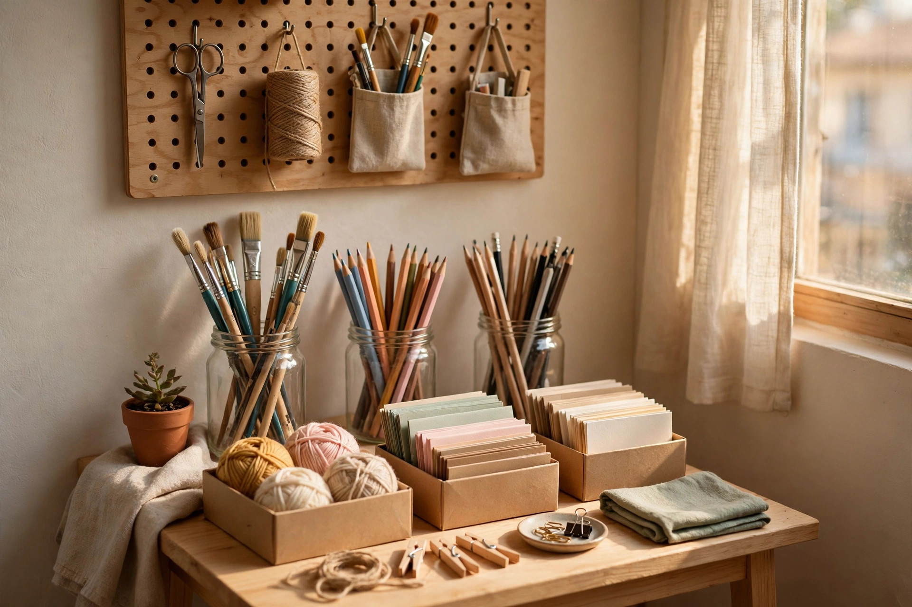

Small Space Storage & Organisation
Small Apartment Craft and Hobby Storage Ideas
Intro
Crafts and hobbies are the hardest things to store in a small apartment. They need supplies, tools and a work surface, and they spread across the dining table the moment you start. The answer is not to give up the hobby — it is to give it a home that packs away in five minutes.
This guide has 12 hobby storage ideas — a rolling cart, labelled boxes and a fold-away table. Each idea lists what it costs, and most are under $25. The rule is simple: everything for one hobby lives in one place, and the dining table is clear again when you finish.

1. A rolling cart for the current project — $25–$40
A three-tier rolling cart holds everything for the project you are working on now, and wheels into a corner when you finish. It costs about $30. Top tier for tools in use, middle tier for materials, bottom tier for the work in progress. A cart that rolls to the table and back means you never carry supplies across the flat in your arms.
2. One box per hobby — $10–$15
Give each hobby its own box: one for knitting, one for painting, one for sewing. Three boxes cost about $12. When you want to knit, you take out the knitting box — not a cupboard full of mixed supplies. Label each box, and keep the boxes on one shelf, so every hobby has a visible home. A hobby without a box is a hobby spread over the flat.
3. A fold-away table — $40–$60
A wall-mounted fold-down table gives you a work surface that disappears when you finish. It costs about $50 and fits with a few screws. Fold it down to work, fold it up to eat dinner. Keep the table clear when it is folded up — a fold-away table covered in clutter is just a shelf.
4. Clear jars for small supplies — $8–$12
Beads, buttons, threads, screws and small parts belong in clear jars with lids, not in one mixed bag. A set of six jars costs about $10. Clear jars mean you can see what you have without opening everything, and lids mean nothing spills. One jar per colour or type, labelled on the lid.
5. A pegboard for tools — $15–$25
A pegboard on the wall above your work spot holds scissors, rulers, brushes and tools where you can see them and reach them. It costs about $20. Hooks and small baskets move around as the project changes. A pegboard keeps tools off the table, which is where the work actually happens.
6. A caddy that goes to the table and back — $10–$15
A caddy with a handle holds the tools for today's work: scissors, glue, pens, the current yarn. It costs about $12. The caddy comes out when you start and goes back on its shelf when you stop. One caddy stops supplies from living permanently on the dining table, which is the most common hobby problem in a small flat.
7. Fabric and paper stored upright — $8–$12
Fabric, paper and card store best upright in a magazine file or a tall box, like books on a shelf. Four files cost about $10. Upright storage means you can flick through and find the colour you want without unfolding a whole pile. Roll fabric instead of folding it, and it will not crease.
8. A sewing kit in a single tin — $5–$10
A sewing kit — needles, thread, buttons, scissors — fits in one tin or small box that lives on the shelf. A tin costs about $8. Keeping the whole kit together means mending takes five minutes instead of a search through three drawers. Restock the tin when you finish a project, not when you start the next one.
9. Yarn and wool in baskets, not bags — $10–$15
Wool in plastic bags tangles and is forgotten. Two or three baskets hold the wool for current projects where you can see it. Three baskets cost about $12. Keep one basket per project, with the pattern tucked inside. Wool stored in the open is wool that gets used; wool in a bag at the back of a cupboard is wool that gets forgotten.
10. A drying and finishing spot — $0–$10
Paintings, glued things and crafts that need to dry need a spot where they will not be touched. A tray on top of a wardrobe or on a high shelf is a free drying spot. A tray costs about $8. Agree that the tray is the only drying place in the flat, and wet crafts stop appearing on every surface.
11. A five-minute pack-away routine — $0
Every hobby session ends the same way: tools back in the caddy, materials back in the box, the table clear. Five minutes, every time, without exception. The routine is what makes a hobby possible in a small flat — without it, the flat slowly becomes a craft room. Set a timer for the last five minutes of your session.
12. One project at a time — $0
The cheapest idea costs nothing. Finish one project before starting the next. Two half-finished projects need twice the storage and twice the table space. A finished project frees its box for the next one, and the flat stays under control. If a project has been untouched for three months, pack it away or let it go.
Conclusion
Hobby storage is a cart, a box per hobby and a five-minute pack-away. A rolling cart and three labelled boxes cost about $45 and give every hobby a home that fits in a corner. Start with one box per hobby today — the dining table will be clear by dinner, and the hobby will still be there tomorrow.
Budget recap
- Rolling cart: ~$30 - Three hobby boxes + jars: ~$22 - Pegboard + caddy: ~$32
Total for a hobby storage setup: ~$45–$60 — or ~$12 with boxes alone.
Pinterest pin titles
- Small Apartment Craft and Hobby Storage Ideas
- 12 Hobby Storage Ideas for Tiny Flats (Table Clear in 5 Minutes)
- Craft Supplies Taking Over? 12 Storage Ideas Under $25